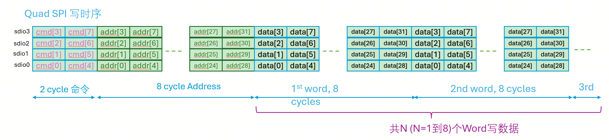

SPI2AXI Bridge 微架构规格书
SPI to AXI4-Lite Bridge Micro-Architecture Low-Level Design (LLD)
模块名称: SPI2AXI Bridge (SPI to AXI4-Lite Bridge)
版本: V1.0 | 日期: 2026-05-21 | 状态: Draft
层次路径: soc.periph.spi2axi | 工艺节点: 待定 (取决于 SoC 平台)
目标频率: SPI 时钟: 50 MHz / AXI 时钟: 待定
1. Module Overview 概览
1.1 Module Identity
| 属性 | 值 |
|---|
| 模块全名 | SPI2AXI Bridge (SPI2AXI) |
| 层次路径 | soc.periph.spi2axi |
| 工艺 / PVT | 待定 (取决于 SoC 平台) |
| 目标频率 | SPI: 50 MHz / AXI: 待定 |
| 供电电压 | 待定 (取决于 SoC 平台) |
| 面积预算 | 待补充 (需 RTL 综合后评估) |
| 功耗预算 | 待补充 (需 RTL 综合后评估) |
1.2 Top-Level Ports Summary
| Port Group | Direction | Width | Description |
|---|
spi_sclk | input | 1 | SPI 串行时钟 @ 50 MHz (max) |
spi_rst_n | input | 1 | SPI 域异步复位, 低有效 |
spi_cs | input | 1 | SPI 片选信号, 低有效 |
spi_sdi[3:0] | input | 4 | SPI 数据输入 (1-wire 或 4-wire) |
spi_sdo[3:0] | output | 4 | SPI 数据输出 (1-wire 或 4-wire) |
axi_aclk | input | 1 | AXI 系统时钟 |
axi_areset_n | input | 1 | AXI 域异步复位, 低有效 |
axi_* | in/out | 多通道 | AXI4-Lite 主接口信号 (AW/W/B/AR/R) |
intr_o | output | 1 | AXI 域中断输出 |
1.3 Module Features
- Feature 1: Standard SPI (1-wire) Slave 模式支持
- Feature 2: Quad SPI / QSPI (4-wire) Slave 模式支持 (通过 CSR 可选)
- Feature 3: AXI4-Lite Master 接口 (5 通道独立握手)
- Feature 4: Dual-clock CDC FIFO 跨时钟域传输 (cmd/wdata/rdata 三路独立)
- Feature 5: 可编程 Dummy Cycles (读操作等待周期, 实际 = DUMMY_CYCLES + 1)
- Feature 6: 可配置地址 Wrap 环绕访问
- Feature 7: SPI 可直接访问的 CSR 寄存器文件
- Feature 8: 待补充 — 中断输出支持
- Feature 9: 待补充 — AXI 错误检测与上报
1.4 Design Assumptions
- A1: SPI 主机在
spi_cs 有效期间保持 spi_sclk 稳定
- A2: AXI 从设备在合理延迟内响应 (不会无限等待)
- A3: SPI 帧格式严格遵循 Opcode (8-bit) + Address (32-bit, 可选) + Data (32-bit) 序列
- A4: 配置寄存器仅在 FSM IDLE 状态下修改
2. Interface Specification 接口
2.1 Port Signal Table
SPI 接口信号
| Signal Name | Direction | Width | Type | Clock Domain | Reset Domain | Description |
|---|
spi_sclk | input | 1 | clock | — | — | SPI 串行时钟，最高 50 MHz |
spi_rst_n | input | 1 | reset async | spi_sclk | — | SPI 域异步复位，低有效 |
spi_cs | input | 1 | data | spi_sclk | spi_rst_n | SPI 片选，低有效 |
spi_sdi[0] | input | 1 | data | spi_sclk | spi_rst_n | SPI 数据输入 (1-wire 模式) |
spi_sdi[3:0] | input | 4 | data | spi_sclk | spi_rst_n | SPI 数据输入 (4-wire 模式) |
spi_sdo[0] | output | 1 | data | spi_sclk | spi_rst_n | SPI 数据输出 (1-wire 模式) |
spi_sdo[3:0] | output | 4 | data | spi_sclk | spi_rst_n | SPI 数据输出 (4-wire 模式) |
AXI4-Lite 主接口信号
| Signal Name | Direction | Width | Clock Domain | Description |
|---|
axi_aclk | input | 1 | — | AXI 系统时钟 |
axi_areset_n | input | 1 | axi_aclk | AXI 域异步复位，低有效 |
awaddr | output | AXI_ADDR_WIDTH | axi_aclk | AXI 写地址 |
awvalid | output | 1 | axi_aclk | AXI 写地址有效 |
awready | input | 1 | axi_aclk | AXI 写地址就绪 |
awid | output | AXI_ID_WIDTH | axi_aclk | AXI 写地址 ID |
awprot | output | 3 | axi_aclk | AXI 写保护类型 (固定 3'b000) |
wdata | output | AXI_DATA_WIDTH | axi_aclk | AXI 写数据 |
wstrb | output | 4 | axi_aclk | AXI 写选通 (固定 4'b1111) |
wvalid | output | 1 | axi_aclk | AXI 写数据有效 |
wready | input | 1 | axi_aclk | AXI 写数据就绪 |
bresp | input | 2 | axi_aclk | AXI 写响应 |
bvalid | input | 1 | axi_aclk | AXI 写响应有效 |
bready | output | 1 | axi_aclk | AXI 写响应就绪 |
bid | input | AXI_ID_WIDTH | axi_aclk | AXI 写响应 ID |
araddr | output | AXI_ADDR_WIDTH | axi_aclk | AXI 读地址 |
arvalid | output | 1 | axi_aclk | AXI 读地址有效 |
arready | input | 1 | axi_aclk | AXI 读地址就绪 |
arid | output | AXI_ID_WIDTH | axi_aclk | AXI 读地址 ID |
arprot | output | 3 | axi_aclk | AXI 读保护类型 (固定 3'b000) |
rdata | input | AXI_DATA_WIDTH | axi_aclk | AXI 读数据 |
rresp | input | 2 | axi_aclk | AXI 读响应 |
rvalid | input | 1 | axi_aclk | AXI 读数据有效 |
rready | output | 1 | axi_aclk | AXI 读数据就绪 |
rid | input | AXI_ID_WIDTH | axi_aclk | AXI 读数据 ID |
2.2 Cycle-Level Timing Diagrams
2.2.1 SPI 帧时序 (Standard SPI 1-wire, CPOL=0, CPHA=0)

图 2.1: SPI 帧时序图 — 写操作 (Opcode + Address + Write Data)
SPI 写帧格式: [Opcode (8-bit)] + [Address (32-bit)] + [Write Data (32-bit)]
SPI 读帧格式: [Opcode (8-bit)] + [Address (32-bit)] + [Dummy Cycles (可编程)] + [Read Data (32-bit)]
2.2.2 AXI4-Lite Write Transaction Timing
Clock Cycle: T0 T1 T2 T3 T4 T5
axi_aclk █▁█▁█▁█▁█▁█▁█▁█▁█▁█▁█▁█▁█▁█▁█▁█▁█▁█▁█▁█
awvalid █████████████___________________________________________
awaddr XXXXXXXXX<AWADDR>XXXXXXXXXXXXXXXXXXXXXXXXXXXXXXXXXXXXXXX
awready █████████████___________________________________________
wvalid ________________██████████████████████████████████▁_______
wdata XXXXXXXXXXXXXXXX<WDATA>XXXXXXXXXXXXXXXXXXXXXXXXXXXXXXXXXX
wready ________________██████████████████████████████████▁_______
bvalid ____________________________________________██████████___
bresp XXXXXXXXXXXXXXXXXXXXXXXXXXXXXXXXXXXXXXXXXXXX<OKAY>XXXXXX__
bready ____________________________________________██████████___
写事务周期描述: T0: AW 地址握手; T2: W 数据握手; T4: B 响应握手。
2.2.3 AXI4-Lite Read Transaction Timing
Clock Cycle: T0 T1 T2 T3 T4 T5
axi_aclk █▁█▁█▁█▁█▁█▁█▁█▁█▁█▁█▁█▁█▁█▁█▁█▁█▁█▁█▁█
arvalid █████████████___________________________________________
araddr XXXXXXXXX<ARADDR>XXXXXXXXXXXXXXXXXXXXXXXXXXXXXXXXXXXXXXX
arready █████████████___________________________________________
rvalid ____________________________________________████████████___
rdata XXXXXXXXXXXXXXXXXXXXXXXXXXXXXXXXXXXXXXXXXXXX<RDATA>XXXXXX__
rresp XXXXXXXXXXXXXXXXXXXXXXXXXXXXXXXXXXXXXXXXXXXX<OKAY>XXXXXX__
rready ____________________________________________████████████___
读事务周期描述: T0: AR 地址握手; T4: R 数据响应握手。
2.3 Backpressure Behavior
| Condition | Backpressure Action | Latency Impact | RTL Implementation |
|---|
| wdata_fifo 满 | SPI 域暂停发送写数据 | SPI 时钟等待 | wdata_fifo_full → spi_tx_hold |
| rdata_fifo 空 | SPI 域等待读数据 | 插入额外 spi_sclk 周期 | rdata_fifo_empty → spi_rx_stall |
| cmd_fifo 满 | SPI 域暂停命令写入 | SPI 时钟等待 | cmd_fifo_full → cmd_hold |
| AXI AW/W ready 低 | AXI 等待握手 | 取决于 AXI 从设备 | axi_awready & axi_wready → advance |
| AXI B valid 低 | AXI 等待写响应 | 取决于 AXI 从设备 | axi_bvalid → capture_bresp |
| AXI R valid 低 | AXI 等待读数据 | 取决于 AXI 从设备 | axi_rvalid → capture_rdata |
2.4 Interrupt Interface
| Interrupt | Source Event | Trigger Type | Clear Mechanism | Polarity |
|---|
intr_o | AXI 事务错误 (bresp/rresp != OKAY) | Level | W1C to INT_STAT | Level high |
intr_o | 事务完成 (待定 — 可选) | Level | W1C to INT_STAT | Level high |
中断聚合: 所有中断事件通过 OR 树合并为一个输出。每个事件有独立的 enable 位和 status 位。
3. Sub-Module Partition 子模块
3.1 Block Diagram

图 3.1: SPI2AXI Bridge 模块内部结构框图
顶层模块 SPI2AXI_Bridge 包含两个时钟域: SPI 时钟域 (spi_sclk) 和 AXI 时钟域 (axi_aclk)，通过 dual-clock CDC FIFO 桥接。
3.2 Sub-Module Responsibilities
| Sub-Module | Input From | Output To | Width | Function |
|---|
| spi_io | SPI Pins | spi_cmd_decoder, FIFO | 1/4→8/32-bit | SPI 串行数据收发，1-wire/4-wire 串并/并串转换 |
| spi_cmd_decoder | spi_io | fsm_ctrl, cmd_fifo | 8+32-bit | SPI 命令解析: 操作码解码、地址锁存 |
| fsm_ctrl | spi_cmd_decoder, csr | 所有模块 | — | 主状态机控制 SPI 到 AXI 转换全流程 |
| csr_regfile | SPI write | fsm_ctrl, wrap | 32-bit | 配置/状态寄存器 |
| cmd_fifo | spi_slave_if (SPI) | axi_master_if (AXI) | ~40-bit | 命令/地址跨时钟域传输 |
| wdata_fifo | spi_slave_if (SPI) | axi_master_if (AXI) | 32-bit | 写数据跨时钟域传输 |
| rdata_fifo | axi_master_if (AXI) | spi_slave_if (SPI) | 32-bit | 读数据跨时钟域传输 |
| axi_wr_ctrl | cmd_fifo, wdata_fifo | AXI AW/W/B | 32-bit | AXI 写事务控制 |
| axi_rd_ctrl | cmd_fifo | AXI AR/R | 32-bit | AXI 读事务控制 |
| wrap_addr_gen | csr_regfile | axi_master_if | 32-bit | Wrap 地址生成: 地址自增、回绕判断 |
3.3 Inter-Module Signal Table
| Signal | Width | Source | Sink | Description |
|---|
opcode_decoded | 3 | spi_cmd_decoder | fsm_ctrl | 解码的操作码类型 |
addr_captured | 32 | spi_cmd_decoder | cmd_fifo | 捕获的 32-bit 地址 |
wdata_captured | 32 | spi_io | wdata_fifo | 捕获的 32-bit 写数据 |
rdata_from_fifo | 32 | rdata_fifo | spi_io | 从 AXI 域返回的读数据 |
cmd_fifo_rd | cmd_width | cmd_fifo | axi_master_if | 命令+地址 (FIFO 读出) |
csr_mode_sel | 1 | csr_regfile | spi_io | SPI 模式选择: 0=1-wire, 1=4-wire |
csr_wrap_en | 1 | csr_regfile | wrap_addr_gen | Wrap 使能 |
csr_dummy_cfg | 8 | csr_regfile | fsm_ctrl | Dummy cycles 配置值 |
fsm_state | 4 | fsm_ctrl | 所有模块 | FSM 当前状态 |
axi_tx_done | 1 | axi_master_if | fsm_ctrl | AXI 事务完成标志 |
wrap_addr_out | 32 | wrap_addr_gen | axi_master_if | Wrap 计算后的地址 |
4. FSM Specification 状态机

图 4.1: SPI2AXI Bridge 主状态机状态转换图
4.1 State Encoding Table
| State Name | Encoding | Description |
|---|
IDLE | 4'b0000 | 空闲/复位状态, 等待 spi_cs 有效 |
OPCODE | 4'b0001 | 接收 8-bit 操作码, 解码读/写操作 |
ADDR | 4'b0010 | 接收 32-bit 地址 (仅内存访问) |
DUMMY | 4'b0011 | 读操作插入虚拟等待周期 (可编程) |
DATA | 4'b0100 | SPI 数据传输阶段 (32-bit, MSB first) |
AXI_WR | 4'b0101 | AXI 写事务执行 (AW→W→B) |
AXI_RD | 4'b0110 | AXI 读事务执行 (AR→R) |
DONE | 4'b0111 | 事务完成, 返回 IDLE |
| RESERVED | 4'b1000~1111 | 未使用编码 (必须解码为 IDLE, 防止锁死) |
Safety: 未使用的编码 (1000~1111) 必须解码为 IDLE，防止 FSM 锁死。
4.2 State Transition Matrix

图 4.2: FSM 状态转移矩阵
| Current State | Condition | Next State | Transition Action |
|---|
| IDLE | spi_cs == 1 | IDLE | 保持 |
| IDLE | spi_cs == 0 | OPCODE | 复位计数器, 开始接收操作码 |
| OPCODE | opcode_rcvd == 0 | OPCODE | 持续移位接收 |
| OPCODE | opcode_rcvd == 1 | ADDR | 锁存操作码, 解码 |
| OPCODE | opcode_rcvd && is_reg_access | DATA | 寄存器访问跳过 ADDR |
| ADDR | addr_rcvd == 0 | ADDR | 接收地址 |
| ADDR | addr_rcvd == 1 && is_read | DUMMY | 读操作, 进入 dummy |
| ADDR | addr_rcvd == 1 && is_write | DATA | 写操作, 进入数据 |
| DUMMY | dummy_cnt < cfg | DUMMY | 等待 dummy 周期 |
| DUMMY | dummy_cnt == cfg | DATA | dummy 结束 |
| DATA | data_done == 0 | DATA | 数据传输中 |
| DATA | data_done && is_write | AXI_WR | 写数据收完 |
| DATA | data_done && is_read | AXI_RD | 读操作 |
| AXI_WR | axi_bvalid == 0 | AXI_WR | 等待写响应 |
| AXI_WR | axi_bvalid == 1 | DONE | 写事务完成 |
| AXI_RD | axi_rvalid == 0 | AXI_RD | 等待读数据 |
| AXI_RD | axi_rvalid == 1 | DONE | 读数据返回 |
| DONE | 无条件 | IDLE | 完成返回 |
Transition Rules: 复位时无条件回到 IDLE; spi_cs 提前释放 → 回到 IDLE (事务中止); 优先级: cs_release > error > normal_transition
4.3 Output Decode Table
| Output Signal | IDLE | OPCODE | ADDR | DUMMY | DATA | AXI_WR | AXI_RD | DONE |
|---|
shift_en | 0 | 1 | 1 | 0 | 1 | 0 | 0 | 0 |
cmd_fifo_wr | 0 | 0 | 1 | 0 | 0 | 0 | 0 | 0 |
wdata_fifo_wr | 0 | 0 | 0 | 0 | 1 | 0 | 0 | 0 |
axi_ar_valid | 0 | 0 | 0 | 1 | 0 | 0 | 0 | 0 |
axi_aw_valid | 0 | 0 | 0 | 0 | 0 | 1 | 0 | 0 |
axi_w_valid | 0 | 0 | 0 | 0 | 0 | 1 | 0 | 0 |
dummy_cnt_en | 0 | 0 | 0 | 1 | 0 | 0 | 0 | 0 |
done_flag_set | 0 | 0 | 0 | 0 | 0 | 0 | 0 | 1 |
Output Decode Logic: 纯组合逻辑 always_comb，不引入额外 clock 周期。
5. Pipeline Specification 流水线

图 5.1: SPI2AXI Bridge 流水线阶段示意图
5.1 Pipeline Stage Definition
SPI2AXI Bridge 的事务处理为串行执行模式 (非流水线)，每次处理一个 SPI 事务。以下是按功能阶段的定义:
| Stage Name | Stage ID | Data Width | Latency | Description |
|---|
| STG_SPI_RX | 0 | 1/4→8/32-bit | 8+32 | SPI 串行数据接收 |
| STG_CMD_DEC | 1 | 8/32-bit | 1 (comb) | 命令解码 |
| STG_CDC_XFER | 2 | cmd_width/32 | 2~8 | CDC FIFO 传输 |
| STG_AXI_TXN | 3 | 32-bit | 2~N | AXI 事务执行 |
| STG_SPI_TX | 4 | 32-bit | 32 | SPI 串行发送 (读) |
5.2 Cycle-by-Cycle Behavior (SPI 写内存, 1-wire)

图 5.2: SPI 写内存事务 cycle-by-cycle 时序
5.3 Stall / Hold / Flush Conditions
| Condition | Action | Stages Affected | Recovery |
|---|
| wdata_fifo 满 | Stall | STG_SPI_RX (hold) | 下游取走后恢复 |
| cmd_fifo 满 | Stall | STG_SPI_RX (hold) | 下游取走后恢复 |
| rdata_fifo 空 | Stall | STG_SPI_TX (hold) | AXI 数据返回后恢复 |
| AXI 从设备未就绪 | Wait | STG_AXI_TXN (hold) | ready 拉高后恢复 |
| SPI 片选提前释放 | Flush | 全部清空 | 回到 IDLE |
Stall 传播路径 (写): AXI backpressure ← STG_AXI_TXN hold ← STG_CDC_XFER hold ← STG_SPI_RX hold
5.4 Bypass Paths

图 5.3: 流水线数据旁路示意图
| Bypass From | Bypass To | Condition | Latency Saved |
|---|
| AXI_RD → rdata_fifo | SPI_TX | AXI 数据在 dummy 周期内返回 | 减少 SPI 读延迟 |
| cmd_fifo (直接) | AXI_TXN | FIFO 非空且 AXI 空闲 | 1~2 cycles |
6. Datapath Specification 数据通路

图 6.1: SPI 数据通路 (接收/发送)
6.1 SPI 数据通路
6.1.1 SPI 接收通路 (Serial → Parallel)
| 组件 | 宽度 | 功能 | 控制信号 |
|---|
| opcode_shift_reg | 8-bit | 操作码串行移位接收 (MSB first) | opcode_shift_en, opcode_rcvd |
| addr_shift_reg | 32-bit | 地址串行移位接收 | addr_shift_en, addr_rcvd |
| wdata_shift_reg | 32-bit | 写数据串行移位接收 | data_shift_en, data_rcvd |
1-wire 模式: 每 sclk 移位 1-bit (spi_sdi[0]); 4-wire 模式: 每 sclk 移位 4-bit (spi_sdi[3:0]); MSB first (左移, LSB 输入新数据)
6.1.2 SPI 操作码解码
| Opcode[7:0] | 操作类型 | 地址字段 | 描述 |
|---|
0x02 | 写内存 | 32-bit | 标准 SPI 写内存 |
0x03 | 读内存 | 32-bit | 标准 SPI 读内存 |
0x42 | 写寄存器 | 0 (编码) | SPI CSR 写 |
0x43 | 读寄存器 | 0 (编码) | SPI CSR 读 |
6.2 Mux Select Encoding
| Mux Name | Sel Width | Sel Value | Source | Destination |
|---|
mux_addr_src | 1 | 0/1 | spi_addr / wrap_out | axi_araddr/awaddr |
mux_data_src | 1 | 0/1 | wdata_fifo / csr_wr | axi_w_data |
mux_rdata_dest | 1 | 0/1 | rdata_fifo → spi_tx | spi_sdo / csr_rd |
6.3 Datapath Widths

图 6.2: 数据通路宽度定义
| Datapath Segment | Width | Rationale |
|---|
| SPI 串行输入 (1-wire) | 1 | 标准 SPI 单线 |
| SPI 串行输入 (4-wire) | 4 | QSPI 4 线 |
| 操作码寄存器 | 8 | 8-bit SPI 命令 |
| 地址寄存器 | 32 | 32-bit AXI 地址 |
| 数据寄存器 | 32 | 32-bit AXI 数据 |
| cmd_fifo 宽度 | 40 | 32-bit addr + 3-bit opcode + 1-bit r/w + 预留 |
| wdata_fifo 宽度 | 32 | 32-bit 写数据 |
| rdata_fifo 宽度 | 32 | 32-bit 读数据 |
| dummy 计数器 | 8 | 最大 255 个 dummy cycle |
6.4 RTL Implementation Template

图 6.3: 数据通路 RTL 代码实现模板
// SPI 1-wire mode shift register for address
logic [31:0] addr_shift_reg;
always_ff @(posedge spi_sclk or negedge spi_rst_n) begin
if (!spi_rst_n)
addr_shift_reg <= 32'b0;
else if (addr_shift_en)
addr_shift_reg <= {addr_shift_reg[30:0], spi_sdi[0]};
end
// Address Mux: SPI address vs Wrap address
always_comb begin
unique case (wrap_en)
1'b0: axi_addr = addr_captured;
1'b1: axi_addr = wrap_addr_out;
endcase
end
// SPI TX shift register (read data output)
logic [31:0] rdata_shift_reg;
always_ff @(posedge spi_sclk or negedge spi_rst_n) begin
if (!spi_rst_n)
rdata_shift_reg <= 32'b0;
else if (rdata_load)
rdata_shift_reg <= rdata_from_fifo;
else if (rdata_shift_en_1w)
rdata_shift_reg <= {rdata_shift_reg[30:0], 1'b0};
else if (rdata_shift_en_4w)
rdata_shift_reg <= {rdata_shift_reg[27:0], 4'b0};
end
// SPI output mux
always_comb begin
if (spi_mode_1w) begin
spi_sdo[0] = rdata_shift_reg[31];
spi_sdo[3:1] = 3'b0;
end else begin
spi_sdo = rdata_shift_reg[31:28];
end
end
7. CSR Register Map 寄存器
7.1 Address Map Overview
SPI 侧配置寄存器，通过 SPI 操作码直接编址访问 (无需 32-bit 地址字段):
| Register Name | Width | Attribute | Reset Value | Description |
|---|
| CTRL | 32 | RW | 0x0000_0000 | 控制寄存器 |
| STATUS | 32 | RO | 0x0000_0001 | 状态寄存器 |
| DUMMY_CFG | 32 | RW | 0x0000_0020 | 虚拟周期配置 |
| WRAP_CFG | 32 | RW | 0x0000_0000 | Wrap 配置寄存器 |
| FIFO_STATUS | 32 | RO | — | FIFO 状态寄存器 |
CSR 编码约定: 未定义的操作码读返回 0，写忽略。防止非法地址访问导致功能异常。
7.2 Bit-Level Field Definitions
7.2.1 CTRL — Control Register
| Bit Field | Bit(s) | Attr | Reset | HW Set | HW Clear | Description |
|---|
| mode_sel | 0 | RW | 1'b0 | sw写1 | sw写0 | 0=1-wire, 1=4-wire |
| wrap_en | 1 | RW | 1'b0 | sw写1 | sw写0 | Wrap 功能使能 |
| soft_rst | 2 | RW自清除 | 1'b0 | sw写1 | 自动清除 | 软复位 (自清除) |
| reserved | 31:3 | RES | 29'b0 | — | — | 读返回0 |
7.2.2 STATUS — Status Register
| Bit Field | Bit(s) | Attr | Reset | HW Set | HW Clear | Description |
|---|
| idle | 0 | RO | 1'b1 | FSM→IDLE | FSM≠IDLE | 模块空闲 |
| busy | 1 | RO | 1'b0 | FSM→OPCODE | FSM→IDLE | 模块忙碌 |
| done | 2 | W1C | 1'b0 | FSM→DONE | sw写1 | 事务完成 |
| axi_error | 3 | W1C | 1'b0 | AXI错误 | sw写1 | AXI 错误标志 |
| reserved | 31:4 | RES | 28'b0 | — | — | 读返回0 |
W1C (Write-1-to-Clear): 软件向该位写 1 时清除；写 0 无影响。硬件设置优先级高于软件清除。
7.2.3 DUMMY_CFG — Dummy Cycle Configuration
| Bit Field | Bit(s) | Attr | Reset | Description |
|---|
| dummy_cycles | 7:0 | RW | 8'd32 | 虚拟周期配置 (实际 Dummy = 此值 + 1) |
| reserved | 31:8 | RES | 24'b0 | 读返回0 |
7.2.4 WRAP_CFG — Wrap Configuration
| Bit Field | Bit(s) | Attr | Reset | Description |
|---|
| wrap_size | 7:0 | RW | 8'd0 | Wrap 窗口大小 N (words), 0=disable |
| reserved | 31:8 | RES | 24'b0 | 读返回0 |
7.2.5 FIFO_STATUS — FIFO Status
| Bit Field | Bit | Attr | Reset | Description |
|---|
| cmd_fifo_empty | 0 | RO | 1'b1 | 命令 FIFO 空标志 |
| cmd_fifo_full | 1 | RO | 1'b0 | 命令 FIFO 满标志 |
| wdata_fifo_empty | 2 | RO | 1'b1 | 写数据 FIFO 空标志 |
| wdata_fifo_full | 3 | RO | 1'b0 | 写数据 FIFO 满标志 |
| rdata_fifo_empty | 4 | RO | 1'b1 | 读数据 FIFO 空标志 |
| rdata_fifo_full | 5 | RO | 1'b0 | 读数据 FIFO 满标志 |
| reserved | 31:6 | RES | 26'b0 | 读返回0 |
8. Clock & Reset Architecture 时钟复位
8.1 Clock Domains
| Domain Name | Source | Frequency | Duty Cycle |
|---|
| spi_sclk | 外部 SPI 主机 | 50 MHz (max) | ~50/50 |
| axi_aclk | SoC PLL | 待定 | 50/50 |
8.2 Clock Relationships
| Domain A | Domain B | Relationship | Synchronous? | CDC Method |
|---|
| spi_sclk | axi_aclk | 无固定比例 | No | Dual-clock FIFO (格雷码指针) |
8.3 CDC Paths
图 8.1: 跨时钟域 CDC 架构
| Source Domain | Dest Domain | Signal(s) | Width | CDC Scheme | Latency |
|---|
| spi_sclk | axi_aclk | cmd_fifo data | 40 | async FIFO | 2~4 axi cycles |
| spi_sclk | axi_aclk | wdata_fifo data | 32 | async FIFO | 2~4 axi cycles |
| axi_aclk | spi_sclk | rdata_fifo data | 32 | async FIFO | 2~4 spi cycles |
| axi_aclk | spi_sclk | intr_o | 1 | 2-flop sync | 2~3 cycles |
CDC FIFO 设计要点: 使用 dual-clock FIFO 内置同步器; 空/满标志使用格雷码指针; cmd_fifo/wdata_fifo: 写=spi_sclk, 读=axi_aclk; rdata_fifo: 写=axi_aclk, 读=spi_sclk
8.4 Reset Architecture
| Reset Signal | Type | Domain | Description |
|---|
| spi_rst_n | Async, active-low | spi_sclk | SPI 域复位 |
| axi_areset_n | Async, active-low | axi_aclk | AXI 域复位 |
| spi_rst_sync_n | 同步释放 | spi_sclk | SPI 域复位同步器输出 |
| axi_rst_sync_n | 同步释放 | axi_aclk | AXI 域复位同步器输出 |
// Reset Synchronizer for SPI Clock Domain
logic spi_rst_sync_r1, spi_rst_sync_n;
always_ff @(posedge spi_sclk or negedge spi_rst_n) begin
if (!spi_rst_n) begin
spi_rst_sync_r1 <= 1'b0;
spi_rst_sync_n <= 1'b0;
end else begin
spi_rst_sync_r1 <= 1'b1;
spi_rst_sync_n <= spi_rst_sync_r1;
end
end
// Reset Synchronizer for AXI Clock Domain
logic axi_rst_sync_r1, axi_rst_sync_n;
always_ff @(posedge axi_aclk or negedge axi_areset_n) begin
if (!axi_areset_n) begin
axi_rst_sync_r1 <= 1'b0;
axi_rst_sync_n <= 1'b0;
end else begin
axi_rst_sync_r1 <= 1'b1;
axi_rst_sync_n <= axi_rst_sync_r1;
end
end
9. Timing Constraints (SDC) 时序约束
9.1 Master Clock Definitions
# SDC: SPI2AXI Bridge Timing Constraints
# 文件: spi2axi.sdc
# 版本: V1.0
#---------------------------------------------------------------------------
# 1. Clock Definitions
#---------------------------------------------------------------------------
# SPI clock - provided by external SPI master (50 MHz)
create_clock -name spi_sclk -period 20.0 [get_ports spi_sclk]
# AXI clock - provided by SoC (assume 100 MHz, adjust as needed)
create_clock -name axi_aclk -period 10.0 [get_ports axi_aclk]
#---------------------------------------------------------------------------
# 2. Clock Groups (asynchronous)
#---------------------------------------------------------------------------
set_clock_groups -asynchronous \
-group [get_clocks spi_sclk] \
-group [get_clocks axi_aclk]
#---------------------------------------------------------------------------
# 3. Input Delays
#---------------------------------------------------------------------------
set_input_delay -clock spi_sclk -max 5.0 [get_ports {spi_sdi[*] spi_cs}]
set_input_delay -clock spi_sclk -min 1.0 [get_ports {spi_sdi[*] spi_cs}]
set_input_delay -clock axi_aclk -max 4.0 [get_ports {awready wready bresp bvalid bid arready rdata rresp rvalid rid}]
set_input_delay -clock axi_aclk -min 0.5 [get_ports {awready wready bresp bvalid bid arready rdata rresp rvalid rid}]
#---------------------------------------------------------------------------
# 4. Output Delays
#---------------------------------------------------------------------------
set_output_delay -clock spi_sclk -max 5.0 [get_ports {spi_sdo[*]}]
set_output_delay -clock spi_sclk -min 1.0 [get_ports {spi_sdo[*]}]
set_output_delay -clock axi_aclk -max 4.0 [get_ports {awaddr awvalid awid awprot wdata wstrb wvalid bready araddr arvalid arid arprot rready}]
#---------------------------------------------------------------------------
# 5. False Paths
#---------------------------------------------------------------------------
set_false_path -from [get_clocks spi_sclk] -to [get_clocks axi_aclk]
set_false_path -from [get_clocks axi_aclk] -to [get_clocks spi_sclk]
set_false_path -from [get_ports spi_rst_n] -to [get_clocks axi_aclk]
set_false_path -from [get_ports axi_areset_n] -to [get_clocks spi_sclk]
set_false_path -to [get_ports intr_o]
#---------------------------------------------------------------------------
# 6. Maximum Constraints
#---------------------------------------------------------------------------
set_max_fanout 20 [current_design]
set_max_transition 0.5 [current_design]
9.2 SDC Constraint Derivation Guide
| Constraint Type | Derivation Method | Typical Value |
|---|
create_clock spi_sclk | 1 / 50 MHz | 20.0 ns |
create_clock axi_aclk | 1 / 100 MHz (假设) | 10.0 ns |
set_input_delay SPI | 0.5 x (Tcycle - board_delay) | 5.0 ns |
set_false_path CDC | 异步时钟域 | — |
10. Implementation Notes 实现
10.1 Coding Style
| Rule | Requirement | Rationale |
|---|
| R10.1 | 用 always_ff @(posedge clk or negedge rst_n) | 统一风格, 便于综合 |
| R10.2 | 用 always_comb (非 always @(*)) | SystemVerilog 最佳实践 |
| R10.3 | 时序用非阻塞(<=), 组合用阻塞(=) | 竞争条件防范 |
| R10.4 | 无 latch (检查综合报告) | 组合逻辑必须覆盖所有 case |
| R10.5 | unique case for mux, priority case for encoder | 综合优化提示 |
| R10.6 | 无 variable-bound for 循环 | 综合必须可展开 |
| R10.7 | 可综合代码中无 initial 块 | 综合工具忽略 |
| R10.8 | 所有触发器必须有复位值 | DFT 扫描链要求 |
| R10.9 | FSM 未用状态必须解码到安全态 | 防止锁死 |
| R10.10 | SPI/AXI 时钟域分属不同 always 块 | 跨时钟域分离 |
10.2 Module Parameterization
| Parameter | Default | Type | Description |
|---|
| AXI_ADDR_WIDTH | 32 | int | AXI 地址总线宽度 |
| AXI_DATA_WIDTH | 32 | int | AXI 数据总线宽度 (固定 32) |
| AXI_ID_WIDTH | 3 | int | AXI ID 信号宽度 |
| DUMMY_CYCLES | 32 | int | SPI 读虚拟周期 (实际=此值+1) |
| CMD_FIFO_DEPTH | 4 | int | 命令 FIFO 深度 (power of 2) |
| DATA_FIFO_DEPTH | 8 | int | 数据 FIFO 深度 (power of 2) |
| SPI_MODE_4W_EN | 1 | bit | QSPI (4-wire) 使能 |
10.3 Synthesis Pragmas
// Synthesis pragma conventions:
// synopsys full_case - force all case items covered
// synopsys parallel_case - force parallel mux
// synopsys translate_off - simulation-only code
// synopsys translate_on - resume synthesis
// Example: exclude debug logic from synthesis
// synopsys translate_off
`ifdef VERILATOR
logic [31:0] spi_debug_counter;
always_ff @(posedge spi_sclk) begin
if (spi_debug_en) spi_debug_counter <= spi_debug_counter + 1;
end
`endif
// synopsys translate_on
10.4 Area / Speed Trade-offs
| Optimization | Technique | Area Impact | Timing Impact | When to Use |
|---|
| SPI mode mux | Shared shift reg for 1-wire/4-wire | -5% | 0 | Area constrained |
| Separate shift regs | Dedicated 1-wire/4-wire registers | +5% | +10% Fmax | Timing critical |
| FIFO depth tuning | Minimize FIFO depth | -10% | 0 | Small area target |
| Clock gating | AND gate + latch on spi_sclk | -15% power | -2% Fmax | Low power modes |
11. Verification Guidance 验证
11.1 Directed Test Scenarios
| Test ID | Scenario | Stimulus | Expected Behavior | Coverage |
|---|
| T01 | SPI 写寄存器 (1-wire) | 写操作码 + 32-bit 数据 | CSR 更新 | CSR 写通路 |
| T02 | SPI 读寄存器 (1-wire) | 读操作码 + dummy | spi_sdo 输出寄存器值 | CSR 读通路 |
| T03 | SPI 写内存 (1-wire) | 写操作码 + 地址 + 数据 | AXI AW→W→B 完成 | AXI 写通路 |
| T04 | SPI 读内存 (1-wire) | 读操作码 + 地址 + dummy | AXI AR→R, spi_sdo 输出 | AXI 读通路 |
| T05 | QSPI 写内存 | 4-wire 模式写内存 | 4-bit 并行传输 | QSPI 模式 |
| T06 | QSPI 读内存 | 4-wire 模式读内存 | 4-bit 并行传输 | QSPI 模式 |
| T07 | Wrap 地址回绕 | Wrap=3 时连续写 | 地址序列正确回绕 | Wrap 功能 |
| T08 | CDC FIFO 满 | SPI 连续写, AXI 较慢 | FIFO 满, 反压生效 | FIFO 满行为 |
| T09 | Dummy Cycle 配置 | 不同 DUMMY_CYCLES | 等待 = 配置 + 1 | Dummy 可编程 |
| T10 | SPI 模式切换 | 1-wire ↔ 4-wire | 模式切换后正确 | 模式切换 |
| T11 | AXI 错误响应 | SLVERR 返回 | STATUS.axi_error 置位 | 错误处理 |
| T12 | SPI 片选异常释放 | cs 提前释放 | 事务中止, 回到 IDLE | 异常恢复 |
| T13 | 复位行为 | 复位断言 | FF 复位, FSM→IDLE | 复位正确性 |
| T14 | 连续事务 | 背靠背 SPI 事务 | 正确衔接 | 事务连续 |
11.2 Assertion Checkers
// Formal Assertions (SVA)
// A1: FSM never enters reserved state
assert_fsm_safe: assert property (
@(posedge spi_sclk) disable iff (!spi_rst_n)
state_q inside {ST_IDLE, ST_OPCODE, ST_ADDR, ST_DUMMY,
ST_DATA, ST_AXI_WR, ST_AXI_RD, ST_DONE}
);
// A2: AXI AWVALID handshake
assert_axi_aw_handshake: assert property (
@(posedge axi_aclk) disable iff (!axi_areset_n)
$rose(awvalid) |-> ##[1:10] awready
);
// A3: AXI ARVALID handshake
assert_axi_ar_handshake: assert property (
@(posedge axi_aclk) disable iff (!axi_areset_n)
$rose(arvalid) |-> ##[1:10] arready
);
// A4: FIFO should not overflow
assert_fifo_overflow: assert property (
@(posedge spi_sclk) disable iff (!spi_rst_n)
!(cmd_fifo_full && cmd_fifo_wr)
);
// A5: FIFO should not underflow
assert_fifo_underflow: assert property (
@(posedge axi_aclk) disable iff (!axi_areset_n)
!(cmd_fifo_empty && cmd_fifo_rd)
);
11.3 Functional Coverage Points
| Cover Group | Cover Point | Description |
|---|
| cg_fsm_all | state_q | 所有 FSM 状态被覆盖 |
| cg_fsm_trans | $past(state_q) → state_q | 所有状态跳转被覆盖 |
| cg_mode | ctrl_reg[0] | 1-wire / 4-wire 模式 |
| cg_wrap | wrap_en && wrap_size | 不同 Wrap 配置 |
| cg_dummy | dummy_cfg_reg | 不同 Dummy 配置 |
| cg_axi_write | awvalid && awready | AXI 写事务 |
| cg_axi_read | arvalid && arready | AXI 读事务 |
| cg_axi_error | bresp/rresp != OKAY | AXI 错误 |
| cg_fifo_full | cmd/wdata/rdata_fifo_full | FIFO 满场景 |
| cg_back2back | 连续两次事务 | 背靠背传输 |
12. DFT Requirements 可测试性
12.1 Scan Chain Specification
| Scan Chain | Clock Domain | Flop Count | IO Pins |
|---|
| chain_spi | spi_sclk | 待补充 | scan_in_spi / scan_out_spi |
| chain_axi | axi_aclk | 待补充 | scan_in_axi / scan_out_axi |
12.2 Test Mode Behavior
| Signal | Function Mode | Test Mode | Description |
|---|
| test_mode_i | 0 | 1 | 全局测试模式使能 |
| scan_enable_i | 0 | 1 | 扫描移位使能 |
| scan_in_spi | — | data_in | SPI 域扫描链输入 |
| scan_out_spi | — | data_out | SPI 域扫描链输出 |
| scan_in_axi | — | data_in | AXI 域扫描链输入 |
| scan_out_axi | — | data_out | AXI 域扫描链输出 |
12.3 Test Mode Rules
- TMR1: 所有 FFs 必须是可扫描替换的 (scan flip-flop)
- TMR2: SPI 域时钟在测试模式下由
test_clk_spi 控制
- TMR3: AXI 域时钟在测试模式下由
test_clk_axi 控制
- TMR4: 异步复位在测试模式下必须被屏蔽
- TMR5: SPI 和 AXI 时钟域使用独立的扫描链
- TMR6: 内部 CDC FIFO 在测试模式下应可旁路或透明
12.4 MBIST
| Memory Instance | BIST Controller | Test Algorithm | Redundancy |
|---|
| cmd_fifo | mbist_ctrl_cmd | March C- | None |
| wdata_fifo | mbist_ctrl_wdata | March C- | None |
| rdata_fifo | mbist_ctrl_rdata | March C- | None |
12.5 JTAG / Boundary Scan
| Feature | Support | Description |
|---|
| IEEE 1149.1 | 依赖 SoC | SPI 接口信号可通过 JTAG 边界扫描访问 |
| IEEE 1500 | 依赖 SoC | Core wrapper for embedded cores |
13. Delivery Checklist 交付清单
13.1 Deliverable Files
| # | File | Description | Status |
|---|
| 1 | spi2axi_top.v | 顶层模块 | 待完成 |
| 2 | spi_slave_if.v | SPI 从设备接口 | 待完成 |
| 3 | cdc_fifo.v | 双时钟域 FIFO | 待完成 |
| 4 | axi_master_if.v | AXI4-Lite 主接口 | 待完成 |
| 5 | wrap_addr_gen.v | Wrap 地址生成器 | 待完成 |
| 6 | csr_regfile.v | 配置寄存器文件 | 待完成 |
| 7 | fsm_ctrl.v | 主状态机控制器 | 待完成 |
| 8 | spi2axi.sdc | 时序约束文件 | 待完成 |
| 9 | spi2axi_tb.v | 模块级测试平台 | 待完成 |
| 10 | spi2axi_test_seq.v | 测试序列定义 | 待完成 |
13.2 Quality Gates
| Gate | Criteria | Entry | Exit |
|---|
| G1: Lint Clean | 0 errors, 0 warnings | RTL ready | Lint report |
| G2: Simulation Pass | All tests pass | Testbench ready | Test report |
| G3: Synthesis Clean | 0 DRC, no latch | SDC + RTL ready | Area/timing report |
| G4: DFT Ready | Scan chain verified | Synthesis done | DFT report |
| G5: Timing Clean | WNS >= 0 | Physical data | STA report |
13.3 Format Requirements
| Deliverable | Format | Header Required | Reviewed By |
|---|
| RTL source | .v | Yes (copyright + header) | Design lead |
| SDC | .sdc | Yes (version + gen info) | PD engineer |
| Testbench | .v | Yes | Verification lead |
| Report | .rpt | Yes | Tech lead |
14. Revision History 修订历史
| Version | Date | Author | Change Description |
|---|
| V0.1 | 2026-05-21 | Chip Design Agent | 初稿 — 从切片数据整理为 LLD 格式 |
Appendix A: Glossary 术语表
| 术语 | 定义 |
|---|
| AXI | Advanced eXtensible Interface (ARM AMBA 总线协议) |
| CDC | Clock Domain Crossing (跨时钟域) |
| CSR | Control and Status Register (控制状态寄存器) |
| DFT | Design for Testability (可测试性设计) |
| Dummy Cycle | SPI 读操作中插入的虚拟等待周期 |
| FIFO | First-In First-Out (先进先出缓冲器) |
| FSM | Finite State Machine (有限状态机) |
| HLD | High-Level Design (架构设计) |
| LLD | Low-Level Design (微架构设计) |
| MBIST | Memory Built-In Self-Test (存储器内建自测试) |
| MSB | Most Significant Bit (最高有效位) |
| PPA | Performance, Power, Area (性能, 功耗, 面积) |
| QSPI | Quad SPI (四线 SPI) |
| SDC | Synopsys Design Constraints (时序约束) |
| SPI | Serial Peripheral Interface (串行外设接口) |
| STA | Static Timing Analysis (静态时序分析) |
| SVA | SystemVerilog Assertions (断言) |
| W1C | Write-1-to-Clear (写 1 清除寄存器属性) |
| WNS | Worst Negative Slack (最差负松弛) |
| Wrap | 地址环绕访问模式 |
Appendix B: Reference Documents 参考文档
| Document | Version | Source | Description |
|---|
| SPI2AXI Architecture HLD | V1.0 | spi2axi_bridge_arch.HLD.md | 模块架构 HLD |
| AMBA AXI4-Lite Protocol Spec | ARM IHI 0022D | ARM | AXI4-Lite 协议标准 |
| SPI Block Guide V03.06 | Motorola | SPI 协议标准 | SPI 协议参考 |
| SPI2AXI Slice Data | V0.1 | 2.slice/*.md | 切片分析数据 |